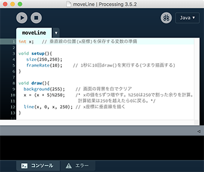
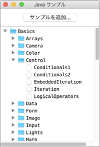
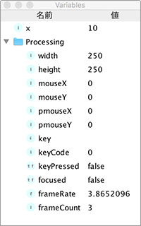

Processingとは
Processingは、簡単にグラフィックスや画像を描いてビジュアル表現を作り出すプログラムを作る目的で、MITで開発されたプログラミング環境で、Java言語を使って作られています。 Java言語は汎用的なプログラミング言語で、幅広い目的で使われますが、１本の線をモニタ上に描くだけでも、知らなければならない事柄が多くあります。line(0, 0, 100, 100)とだけ書けば線が引けるプログラムとなるように、裸のJava言語にProcessingという覆いをかけて、容易に描画プログラムを作成できるようになっています。Processingではプログラムをスケッチ(Sketch)とも呼びます。これはクレヨンや鉛筆でスケッチするように、プログラムでグラフックスを描くことを意図しています。
Processingウィンドウ

Processingを起動すると、図のような画面が現れます。簡単な編集機能を備えたエディタとプログラム実行機能をもち、プログラムを作成し、実行し、テストを行えます。上部にプログラムの実行や停止を行うボタンが並び、その下がプログラムを編集するエディタになっています。
スケッチを保存すると、スケッチにつけた名前のフォルダが作成され、その中に拡張子pdeのファイルができます。これがProcessingプログラムのソースコードです(テキストファイル)。 エディタに記述されたプログラムは、実行ボタンを押すと、裏でProcessingのエディタ上に入力した命令を埋め込んだJavaプログラムが自動生成され、続いてコンパイル(解釈)・実行されます。
スケッチにはProcessingに定義された命令(関数と呼ぶ)のほか、Java言語がもともともっている命令を書くこともできます。プログラムの書き方は基本的にJava言語と同じです。
ウィンドウ下部の黒い背景の部分は、コンソールで、プログラム実行中に起こったエラーやシステムからのメッセージなどが表示されます。プログラム内に、プログラムの状態をコンソールに表示する命令を書いておくと、プログラム開発中の誤り発見に役立ちます。
ボタン・メニューの機能
プログラムが表示されるタブの上、ボタンアイコンが並ぶ部分がツールバーです。 一番右の小さい四角で囲まれたアイコン(デフォルトではJAVA)は、モードの切り替えボタンで、この資料ではJavaモードを使います。ツールバー上のアイコンは、左から順に次のような機能です。
- 実行：プログラムを実行します。描画ウィンドウが現れ、そこに指示したスケッチが描かれます。
- 停止:プログラムの実行を終了します。
- デバッグ：右端の蝶をイメージしたアイコンはデバッガ(プログラムのミスを見つけるための道具)です。
その他、メニュー上の主な項目は以下のようなものです。
- ファイル→新規:新しいスケッチ(プログラム)を作ります。白紙のエディタウィンドウが表示されます。
- ファイル→開く：既存のプログラムをエディタ上に開きます。ポップメニューが横に表示され、そこから読込むプログラムを選択できます。
- ファイル→保存： 画面上に表示しているプログラムを保存します。まだ一度も保存していないプログラムの場合は名前を付けて保存する場所と名前を指定するダイアログウィンドウが現れます。ここで入力した名前のフォルダ(スケッチフォルダ)が作られ、その名前で拡張子がpdeのファイルにプログラムが保存されます。既存のプログラムの場合は上書き保存になります。
- ファイル→アプリケーションとしてエクスポート：表示されているスケッチから、Processingから独立して実行できるアプリケーションを自動生成します。
- 編集→自動フォーマット：行の先頭を適切に字下げして、ソースコードを見やすく整えます。
- スケッチ→スケッチフォルダーを開く：表示されているスケッチから、Processingから独立して実行できるアプリケーションを自動生成します。
サンプルの実行

メニューの[ファイル]の[サンプル]にはprocessingの機能を使った多くのサンプルが提供されています。実行してみよう。例えば、Basics→Transform→Rotateを選択すると、Rotate.pdeプログラムがProcessingウィンドウに表示されます。Runボタンをクリックすると、描画ウィンドウが表示され、プログラムに記述されたグラフィックスが描かれます。ウィンドウはスケッチを描く画用紙に相当します。エディタ上でプログラムを変更し、Runボタンを押してその変化を確めてテストすることで、プログラムを作成していきます。保存しない限り、エディタ上で行った変更は保存されないので、サンプルを変更・実行して試すことが自由に容易にできます。
デバッグ

Processing環境の上部右から2つ目の蝶をイメージしたアイコンはデバッガを起動する、終了する切り替えボタンです。プログラムのミスのことをバグ(小さい虫のこと)と呼び、それを見つけて取り除くためのた道具がデバッガです。デバッガを起動すると、[ステップ] と[続行] のアイコンがツールバーに現れ、左図のVariablesウィンドウが開きます。プログラムの実行を好きなところで止めて、その時の変数(Variables)の値を見て、誤りを見つける助けとします。
エディタエリアの行番号の部分で、クリックすると行番号がひし形に変わり、プログラムの実行がその行で一旦停止されます。その後[ステップ] アイコンをクリックすると1行ずつ実行され、[続行] アイコンをクリックすると再びその行に来た時止まります。
Variablesウィンドウには[Processing] の名前の下に、Processingシステムが管理する変数の値の一覧が示されます。
Processingの言語仕様
メニューの[ヘルプ] には基本的な解説へのリンクがあります。 [リファレンス]からは言語仕様の一覧が参照できます。次のURLからもリファレンスを参照できます。 https://processing.org/reference/